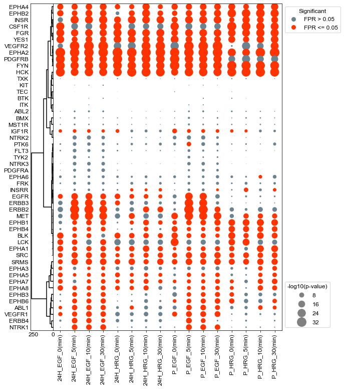
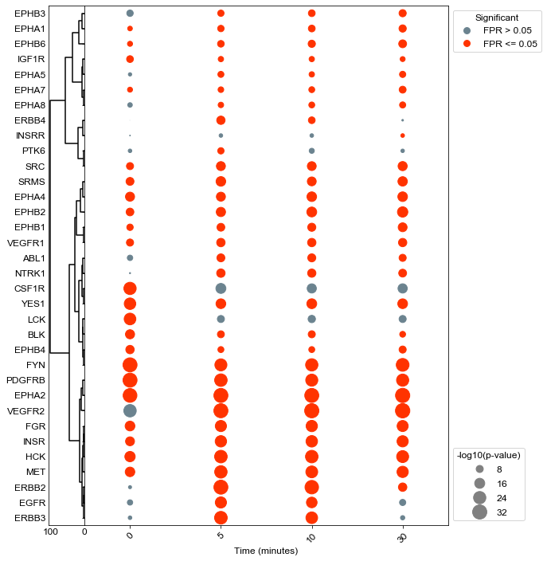
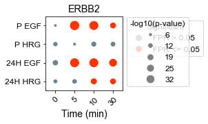
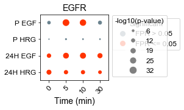

EGF and HRG Stimulation of ERBB2 Overexpressing HMEC Cells (Wolf Yadlin 2006)#
[1]:
#Supporting packages for analysis
import numpy as np
import pandas as pd
#KSTAR imports
from kstar import config, helpers, calculate
from kstar.plot import DotPlot
#Set matplotlib defaults for arial 12 point font
from matplotlib import rcParams
rcParams['font.family'] = 'sans-serif'
rcParams['font.sans-serif'] = ['Arial']
rcParams['font.size'] = 12
import matplotlib.pyplot as plt
#where supplementary data was downloaded to (From https://figshare.com/articles/dataset/KSTAR_Supplementary_Data/14919726)
SUPPLEMENTS_DIR = './'
#Directory where KSTAR Supplemental data was set
odir = SUPPLEMENTS_DIR+'Supplements/SupplementaryData/Control_Experiments/EGF_184A1_HER2_WolfYadlin2006/'
#load the Mann Whitney activities and FPR for Tyrosine predictions,
#it will be faster and less data than loading all KSTAR outputs
activities = pd.read_csv(odir+'/RESULTS/EGF_HER2_Y_mann_whitney_activities.tsv', sep='\t', index_col=0)
fpr = pd.read_csv(odir+'/RESULTS/EGF_HER2_Y_mann_whitney_fpr.tsv', sep='\t', index_col=0)
#load kinase map from supplementary data
KINASE_MAP = pd.read_csv(SUPPLEMENTS_DIR+'SupplementaryData/Map/globalKinaseMap.csv', index_col = 0)
#set preferred kinase names from the kinase map (make a kinase_dict)
kinase_dict = {}
for kinase in activities.index:
kinase_dict[kinase] = KINASE_MAP.loc[kinase,'Preferred Name']
[4]:
#set up a description table
cell_dict = {}
treatment_dict = {}
for col in activities.columns:
label = col.split(':')
descr = label[1]
descr_labels = descr.split('_')
cell_dict[col] = descr_labels[0]
treatment_dict[col] = descr_labels[1]
[5]:
temp1 = pd.DataFrame.from_dict(cell_dict, orient='index', columns=['Cell Type'])
temp2 = pd.DataFrame.from_dict(treatment_dict, orient='index', columns=['Growth Factor'])
s1 = temp1.join(temp2)
s1['ID'] = s1.index
[6]:
s1
[6]:
| Cell Type | Growth Factor | ID | |
|---|---|---|---|
| data:24H_EGF_0(min) | 24H | EGF | data:24H_EGF_0(min) |
| data:24H_EGF_5(min) | 24H | EGF | data:24H_EGF_5(min) |
| data:24H_EGF_10(min) | 24H | EGF | data:24H_EGF_10(min) |
| data:24H_EGF_30(min) | 24H | EGF | data:24H_EGF_30(min) |
| data:24H_HRG_0(min) | 24H | HRG | data:24H_HRG_0(min) |
| data:24H_HRG_5(min) | 24H | HRG | data:24H_HRG_5(min) |
| data:24H_HRG_10(min) | 24H | HRG | data:24H_HRG_10(min) |
| data:24H_HRG_30(min) | 24H | HRG | data:24H_HRG_30(min) |
| data:P_EGF_0(min) | P | EGF | data:P_EGF_0(min) |
| data:P_EGF_5(min) | P | EGF | data:P_EGF_5(min) |
| data:P_EGF_10(min) | P | EGF | data:P_EGF_10(min) |
| data:P_EGF_30(min) | P | EGF | data:P_EGF_30(min) |
| data:P_HRG_0(min) | P | HRG | data:P_HRG_0(min) |
| data:P_HRG_5(min) | P | HRG | data:P_HRG_5(min) |
| data:P_HRG_10(min) | P | HRG | data:P_HRG_10(min) |
| data:P_HRG_30(min) | P | HRG | data:P_HRG_30(min) |
Plot all samples and kinases#
[13]:
results = activities
sig=fpr
results = -np.log10(results)
#Setup a figure with a context strip at the top for HER2 status and activity dots on the below axis
fig, axes = plt.subplots(figsize = (9, 12),
nrows = 1, ncols = 2,
sharex = 'col',
sharey = 'row',
gridspec_kw = {
'width_ratios':[0.1,1]
},)
fig.subplots_adjust(wspace=0, hspace=0)
dots = DotPlot(results,
sig,
figsize = (9,12),
dotsize = 10,
legend_title='-log10(p-value)', kinase_dict=kinase_dict)
#Cluster changes the sorting of the values array, so be sure to plot context last so that it is in the same sort.
#dots.drop_kinases_with_no_significance()
dots.cluster(orientation = 'left', ax = axes[0], method='ward')
#dots.cluster(orientation = 'top', ax = axes[0,1], method='ward')
#dots.context(ax=axes[1,1], info = s1_temp, id_column = 'ID', context_columns = ['response', 'Patient ID'], orientation = 'top', dotsize =200, markersize= 15 )
dots.dotplot(ax = axes[1])
#plt.xlabel('Time (minutes)', FontSize=12)
#plt.xticks(rotation = 45, FontSize=12)
plt.yticks(FontSize=12)
plt.savefig(odir+'WolfYadlin2006_all.pdf', bbox_inches='tight')

Plot just EGF HMEC data for comparison to MRM experiment#
[10]:
results = activities
#take the subset of headers
colDict = {}
colDict['data:P_EGF_0(min)'] = '0'
colDict['data:P_EGF_5(min)'] = '5'
colDict['data:P_EGF_10(min)'] = '10'
colDict['data:P_EGF_30(min)'] = '30'
results = results[colDict.keys()]
sig = fpr[colDict.keys()]
results = -np.log10(results)
#Setup a figure with a context strip at the top for HER2 status and activity dots on the below axis
fig, axes = plt.subplots(figsize = (9, 12),
nrows = 1, ncols = 2,
sharex = 'col',
sharey = 'row',
gridspec_kw = {
'width_ratios':[0.1,1]
},)
fig.subplots_adjust(wspace=0, hspace=0)
dots = DotPlot(results,
sig,
figsize = (9,12),
dotsize = 10,
legend_title='-log10(p-value)',x_label_dict=colDict, kinase_dict=kinase_dict)
#Cluster changes the sorting of the values array, so be sure to plot context last so that it is in the same sort.
dots.drop_kinases_with_no_significance()
dots.cluster(orientation = 'left', ax = axes[0], method='ward')
#dots.cluster(orientation = 'top', ax = axes[0,1], method='ward')
#dots.context(ax=axes[1,1], info = s1_temp, id_column = 'ID', context_columns = ['response', 'Patient ID'], orientation = 'top', dotsize =200, markersize= 15 )
dots.dotplot(ax = axes[1])
plt.xlabel('Time (minutes)', FontSize=12)
plt.xticks(rotation = 45, FontSize=12)
plt.yticks(FontSize=12)
plt.savefig(odir+'EGF_HMEC_4timepoint_all.pdf', bbox_inches='tight')

Reshape results and plot to compare kinase between conditions#
[14]:
def reshape_results(df, kinase, order):
"""
df could be activities or fpr, this will reshape for a specific kinase a new dataframe for plotting by condition
according to order
"""
times = ['0(min)', '5(min)', '10(min)', '30(min)']
series = df.loc[kinase]
#reshape for each
newDict = {}
for name in order:
#newName = kinase+' '+name
newName = name #name is the experiment, such as P_EGF
newName = newName.replace('_', ' ')
oldName_base = 'data:'+name
newDict[newName] = []
for time in times:
strName = oldName_base+'_'+time
newDict[newName].append(series[strName])
df_out = pd.DataFrame.from_dict(newDict, orient='index', columns=times)
return df_out
[17]:
def plot_results(activities, fpr):
results = activities
results = -np.log10(results)
#Setup a figure with a context strip at the top for HER2 status and activity dots on the below axis
fig, axes = plt.subplots(figsize = (2, 2),
nrows = 1, ncols = 1)
fig.subplots_adjust(wspace=0, hspace=0)
dots = DotPlot(results,
fpr,
figsize = (2,2),
dotsize = 5,
legend_title='-log10(p-value)',
x_label_dict = {'0(min)': '0', '5(min)': '5', '10(min)': '10', '30(min)': '30'})
dots.dotplot(ax = axes, max_size=32)
plt.xticks(rotation = 45, FontSize=12)
plt.yticks(FontSize=12)
plt.xlabel('Time (min)', FontSize=14)
[18]:
kinases = ['ERBB2', 'EGFR'] #'ERBB3']
for kinase in kinases:
df = activities
order = ['P_EGF', 'P_HRG', '24H_EGF', '24H_HRG']
activities_new = reshape_results(df, kinase, order)
fpr_new = reshape_results(fpr, kinase, order)
plot_results(activities_new, fpr_new)
plt.title(kinase)
plt.savefig(odir+'Subset_'+kinase+'.pdf', bbox_inches='tight')

